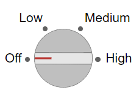

DiscreteKnob
Discrete knob UI component
- 
Description
A discrete knob UI component represents an instrument control knob and allows an
app user to select an option from a discrete set in an app. Use the
DiscreteKnob object to modify the appearance and behavior of a discrete
knob after you create it.
Creation
Create a discrete knob in an app using the uiknob function, specifying the knob style as
"discrete".
Properties
Knob
Value, specified as an element of the Items or
ItemsData arrays. By default, Value is the
first element in Items.
Specifying Value as an element of Items
sets the knob selector to the corresponding label on the knob. If
ItemsData is not empty, then Value must be
set to an element of ItemsData, and the knob selector will point
to the associated label.
Knob options, specified as a cell array of character vectors, string array, or 1-D
categorical array. The array must contain at least two elements. The knob displays as
many options as there are elements in the Items array. The
options display in clockwise order. If you specify this property as a categorical
array, MATLAB® uses the values in the array, not the full set of categories.
Example: {'Off','Slow','Fast'}
Example: {'1','2','3','4'}
Data associated with each element of the Items property value,
specified as a 1-by-n numeric array or a 1-by-n cell array. It is valid to specify
duplicate array elements in the ItemsData value.
When the number of array elements in the ItemsData and
Items do not match:
If the
ItemsDatavalue is empty, then allItemselements are presented to the app user.If the
ItemsDatavalue has more elements than theItemsvalue, then all theItemselements are presented to the app user and MATLAB ignores the extraItemsDataelements.If the
ItemsDatavalue has fewer elements than theItemsvalue (but greater than none), then the onlyItemselements presented to the app user are those that have a correspondingItemsDatavalue.
Example: {'One' 'Two' 'Three'}
Example: {10 20 30 40}
Index of the component value in the list of items or item data, specified as a positive integer.
In most cases, you can use the Value property to query and
update the component value. However, the ValueIndex property can
be useful when both the Items and ItemsData
properties are nonempty. In this case, you can use the ValueIndex
property to query the element of Items that corresponds to the
current value.
fig = uifigure; k = uiknob(fig,"discrete", ... "Items",["Off","Slow","Fast"], ... "ItemsData",[0 20 50]); idx = k.ValueIndex; disp(k.Items(idx) + ": " + k.Value)
Off: 0
Font
Font color, specified as an RGB triplet, a hexadecimal color code, or one of the options listed in the table.
RGB triplets and hexadecimal color codes are useful for specifying custom colors.
An RGB triplet is a three-element row vector whose elements specify the intensities of the red, green, and blue components of the color. The intensities must be in the range
[0,1]; for example,[0.4 0.6 0.7].A hexadecimal color code is a character vector or a string scalar that starts with a hash symbol (
#) followed by three or six hexadecimal digits, which can range from0toF. The values are not case sensitive. Thus, the color codes"#FF8800","#ff8800","#F80", and"#f80"are equivalent.
Alternatively, you can specify some common colors by name. This table lists the named color options, the equivalent RGB triplets, and hexadecimal color codes.
| Color Name | Short Name | RGB Triplet | Hexadecimal Color Code | Appearance |
|---|---|---|---|---|
"red" | "r" | [1 0 0] | "#FF0000" |
|
"green" | "g" | [0 1 0] | "#00FF00" |
|
"blue" | "b" | [0 0 1] | "#0000FF" |
|
"cyan"
| "c" | [0 1 1] | "#00FFFF" |
|
"magenta" | "m" | [1 0 1] | "#FF00FF" |
|
"yellow" | "y" | [1 1 0] | "#FFFF00" |
|
"black" | "k" | [0 0 0] | "#000000" |
|
"white" | "w" | [1 1 1] | "#FFFFFF" |
|
This table lists the default color palettes for plots in the light and dark themes.
| Palette | Palette Colors |
|---|---|
Before R2025a: Most plots use these colors by default. |
|
|
|
You can get the RGB triplets and hexadecimal color codes for these palettes using the orderedcolors and rgb2hex functions. For example, get the RGB triplets for the "gem" palette and convert them to hexadecimal color codes.
RGB = orderedcolors("gem");
H = rgb2hex(RGB);Before R2023b: Get the RGB triplets using RGB =
get(groot,"FactoryAxesColorOrder").
Before R2024a: Get the hexadecimal color codes using H =
compose("#%02X%02X%02X",round(RGB*255)).
Interactivity
Tooltip, specified as a character vector, cell array of character vectors, string array, or 1-D categorical array. Use this property to display a message when the user hovers the pointer over the component at run time. The tooltip displays even when the component is disabled. To display multiple lines of text, specify a cell array of character vectors or a string array. Each element in the array becomes a separate line of text. If you specify this property as a categorical array, MATLAB uses the values in the array, not the full set of categories.
Context menu, specified as a ContextMenu object created using the uicontextmenu function. Use this property to display a context menu when
you right-click on a component.
Position
Location and size of the knob, excluding the state marks and labels, specified as
the vector, [left bottom width height]. This table describes each
element in the vector.
| Element | Description |
|---|---|
left | Distance from the inner left edge of the parent container to the outer left edge of the knob |
bottom | Distance from the inner bottom edge of the parent container to the outer bottom edge of the knob |
width | Distance between the right and left outer edges of the knob, excluding tick marks and labels |
height | Distance between the top and bottom outer edges of the knob, excluding tick marks and labels |
All measurements are in pixel units.
The knob has a fixed width-to-height aspect ratio of 1 to 1. Therefore, you cannot
change the knob width and height independently of one another. To change the knob
size, specify a desired size for the knob by using k.Position(3:4) = [width
height]. MATLAB automatically sizes the knob to fit within the box defined by the
desired size while maintaining its aspect ratio.
The Position values are relative to the
drawable area of the parent container. The drawable area is the area
inside the borders of the container and does not include the area occupied by decorations such
as a menu bar or title.
Example: [100 200 60 60]
Inner location and size of the knob, excluding state marks and state labels,
specified as the vector, [left bottom width height]. Position
values are relative to the parent container. All measurements are in pixel units. This
property value is identical to Position for knob
components.
This property is read-only.
Outer location and size of the knob, including state marks and labels, returned as
the vector, [left bottom width height]. Position values are
relative to the parent container. All measurements are in pixel units.
Layout options, specified as a
GridLayoutOptions object. This property specifies options for
components that are children of grid layout containers. If the component is not a
child of a grid layout container (for example, it is a child of a figure or panel),
then this property is empty and has no effect. However, if the component is a child of
a grid layout container, you can place the component in the desired row and column of
the grid by setting the Row and Column
properties on the GridLayoutOptions object.
For example, this code places a discrete knob in the third row and second column of its parent grid.
g = uigridlayout([4 3]);
k = uiknob(g,'discrete');
k.Layout.Row = 3;
k.Layout.Column = 2;To make the knob span multiple rows or columns, specify the
Row or Column property as a two-element
vector. For example, this knob spans columns 2 through
3:
k.Layout.Column = [2 3];
Callbacks
Value changed callback, specified as one of these values:
A function handle.
A cell array in which the first element is a function handle. Subsequent elements in the cell array are the arguments to pass to the callback function.
A character vector containing a valid MATLAB expression (not recommended). MATLAB evaluates this expression in the base workspace.
This callback executes when the user turns the knob selector in the app. The
callback does not execute if the Value property changes
programmatically.
This callback can access specific information about the user’s interaction with
the knob. MATLAB passes this information in a ValueChangedData object as the second argument to your callback function.
In App Designer, the argument is called event. You can query the
object properties using dot notation. For example,
event.PreviousValue returns the previous value of the knob. The
ValueChangedData object is not available to
callback functions specified as character vectors.
The following table lists the properties of the ValueChangedData object.
| Property | Value |
|---|---|
Value | Value of knob after the app user’s most recent interaction |
PreviousValue | Value of knob before the app user’s most recent interaction |
ValueIndex | Index of knob value in items after the app user’s most recent interaction |
PreviousValueIndex | Index of knob value in items before the app user’s most recent interaction with it |
Source | Component that executes the callback. |
EventName | 'ValueChanged' |
For more information about writing callbacks, see Callbacks in App Designer.
Callback Execution Control
Parent/Child
Parent container, specified as a Figure object or
one of its child containers: Tab, Panel, ButtonGroup, or
GridLayout. If no container is specified,
MATLAB calls the uifigure function to create a new Figure object that serves as the parent container.
Identifiers
This property is read-only.
Type of graphics object, returned as 'uidiscreteknob'.